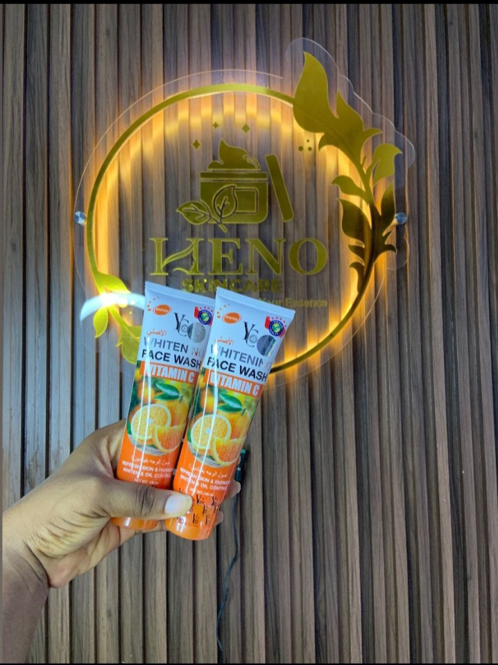

YC WHITENING FACE WASH VITAMIN C
YC Whitening Face Wash with Vitamin C deeply cleanses your skin, removing dirt, oil, and impurities while promoting a brighter, even-toned complexion. Enriched with natural Vitamin C, it helps reduce dark spots, fade blemishes, and protect the skin from free radicals. Leaves your face feeling refreshed, smooth, and radiant after every wash.
- Deep pore cleansing
- Brightens and evens skin tone
- Reduces dark spots and blemishes
- Refreshes and revitalizes dull skin
How to Use: Apply a small amount to a wet face, massage gently in circular motions, then rinse thoroughly. Use twice daily for best results.
₦{7000}